Echo
실시간으로 메시지가 메아리치다
그룹 채팅, 1:1 대화, 나와의 메모까지. 친구와 채팅방을 만들고 사진·링크를 나누며, 읽음 표시로 대화 흐름을 놓치지 않습니다.
주요 화면
로그인부터 채팅방까지, Echo의 핵심 화면을 미리 볼 수 있습니다.
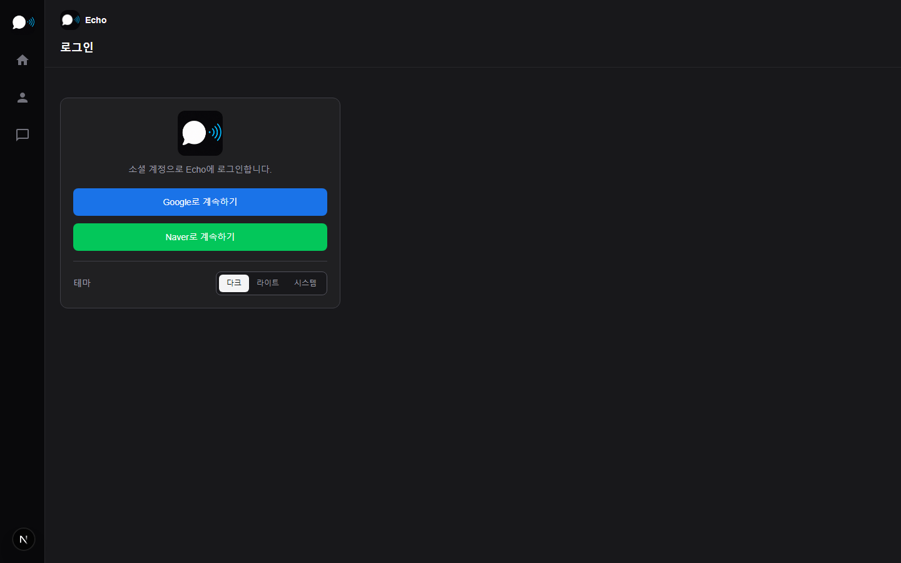
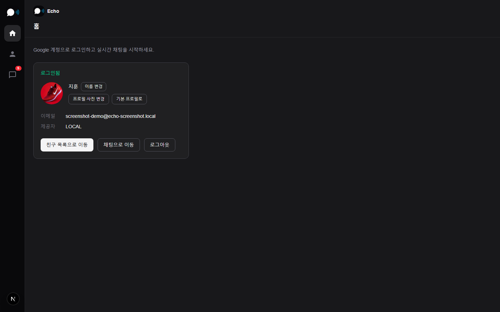
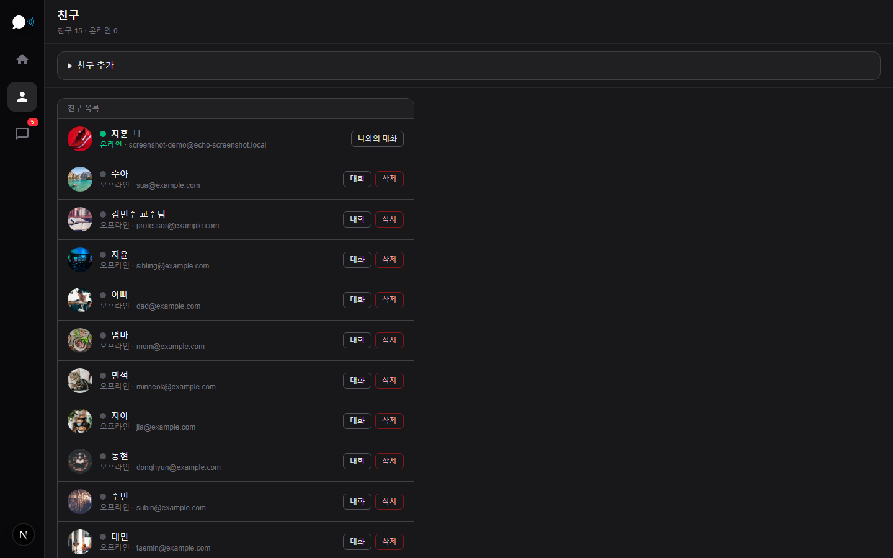
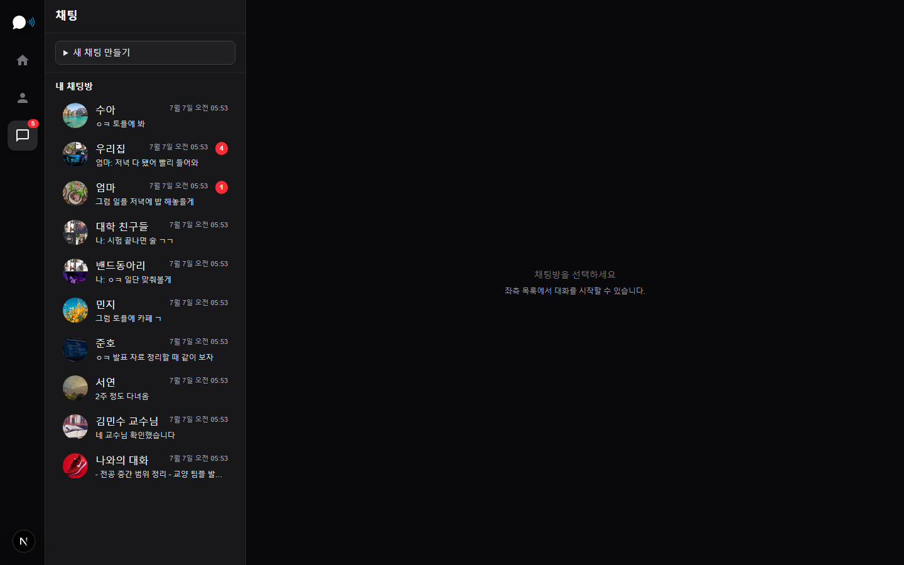
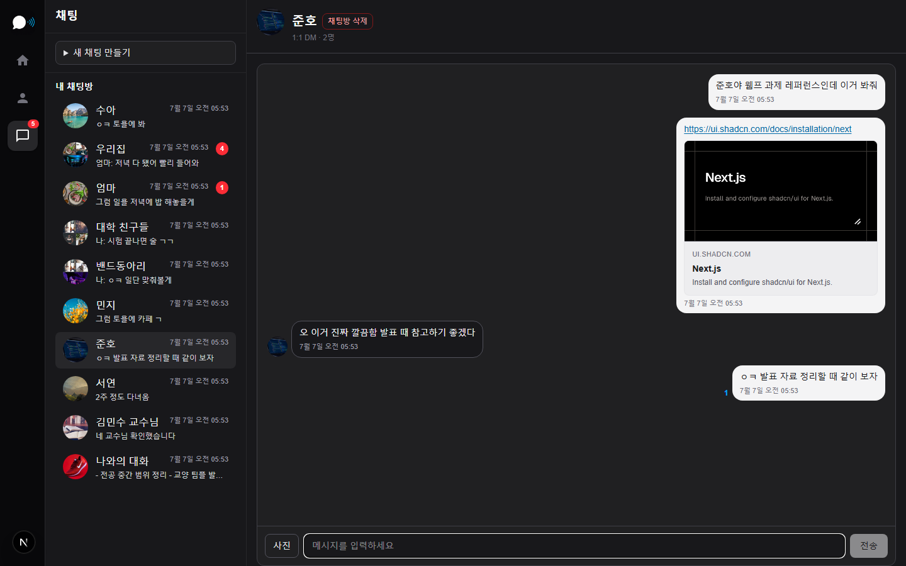
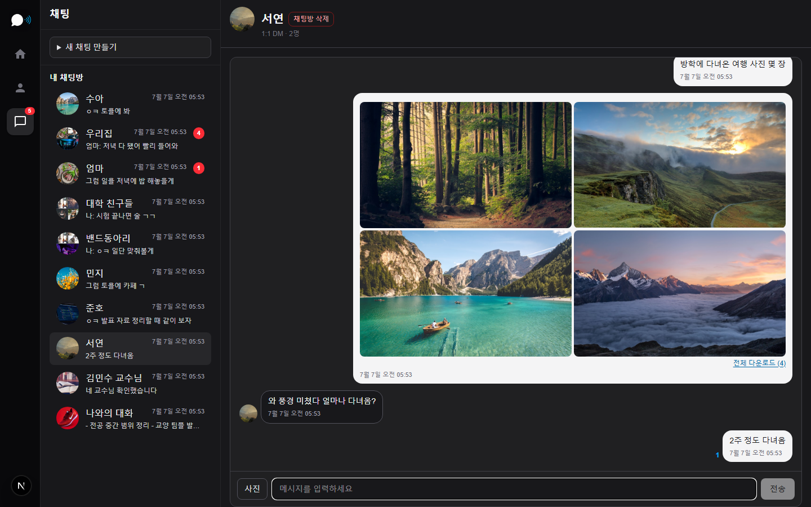
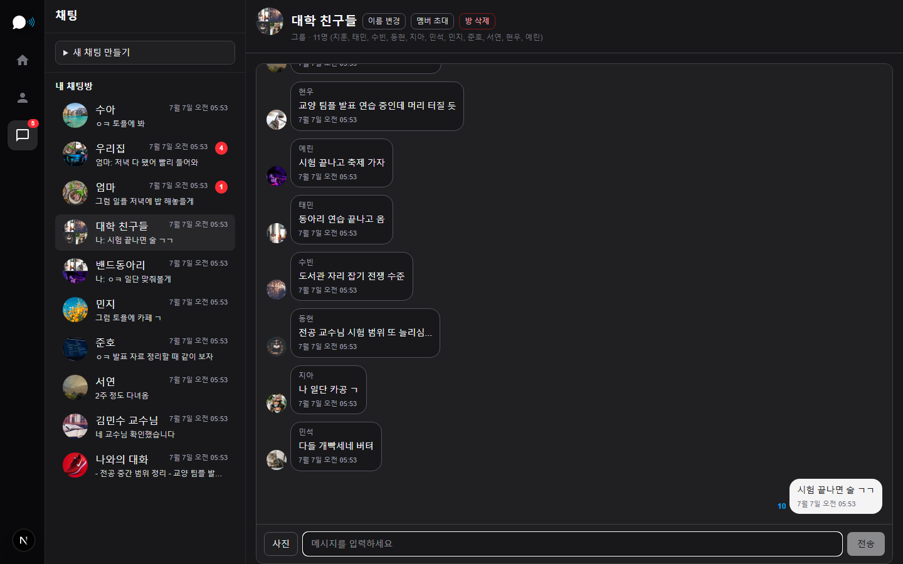
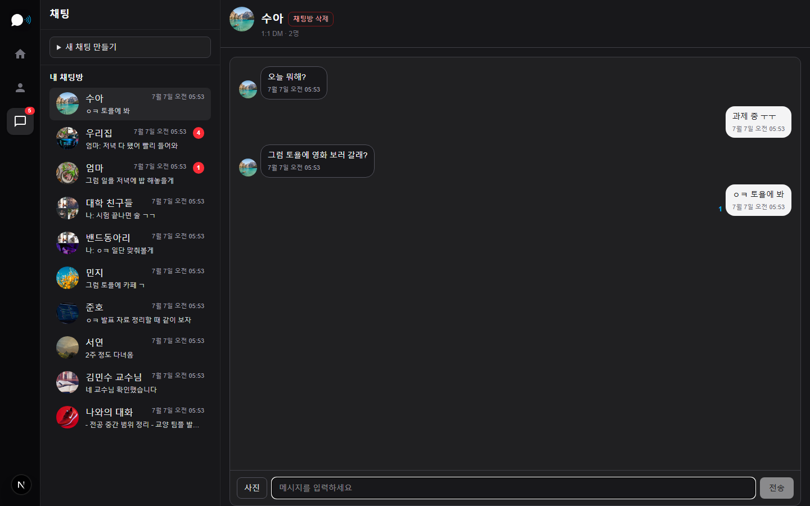
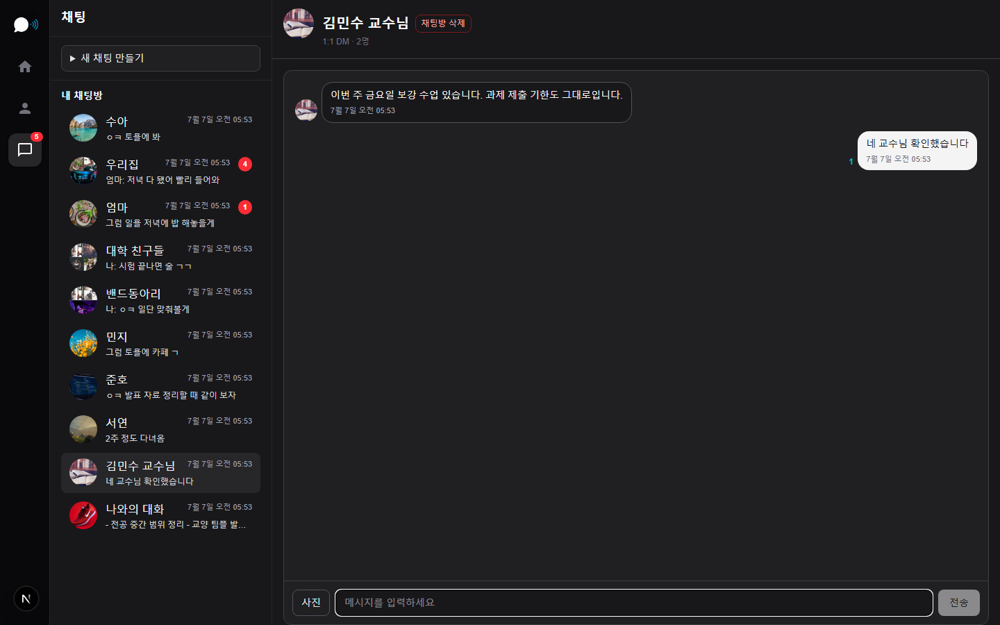
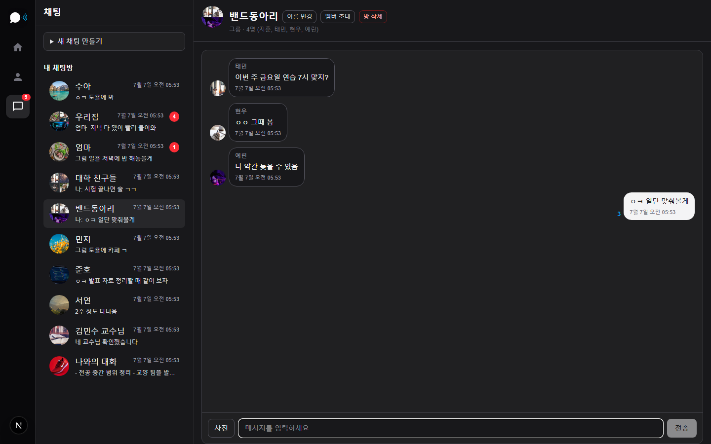
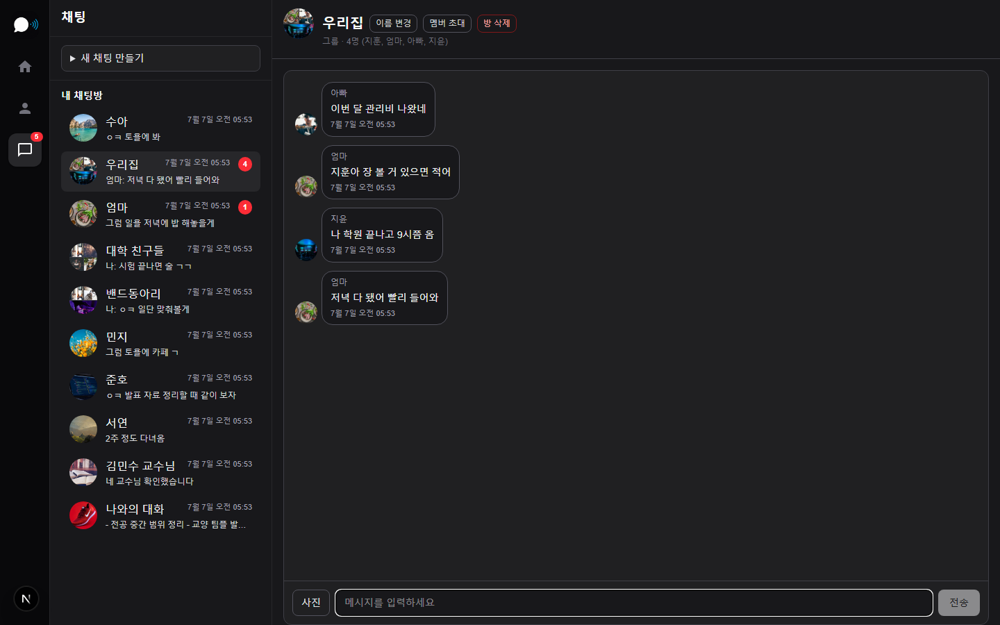
이런 것들을 할 수 있어요
-
1
Google·Naver로 간편 로그인 별도 회원가입 없이 소셜 계정으로 바로 시작합니다.
-
2
프로필 꾸미기 표시 이름과 프로필 사진을 바꿔 나만의 프로필을 만들 수 있습니다.
-
3
친구 추가와 별칭 이름이나 이메일로 친구를 찾고, 원하는 이름으로 저장해 채팅 목록에 표시할 수 있습니다.
-
4
온라인 상태 확인 친구가 지금 접속 중인지 한눈에 볼 수 있습니다.
-
5
그룹·1:1·나와의 대화 단체 채팅방, 일대일 DM, 혼자 메모하는 나와의 대화방을 만들 수 있습니다.
-
6
실시간 메시지 보낸 메시지가 바로 상대 화면에 전달됩니다.
-
7
사진 여러 장 보내기 채팅방에 사진을 끌어다 놓거나 선택해 앨범처럼 보낼 수 있습니다.
-
8
링크 미리보기 URL을 붙이면 제목·설명이 카드로 보여 대화가 더 읽기 쉽습니다.
-
9
읽음 표시와 미읽음 배지 상대가 어디까지 읽었는지 확인하고, 안 읽은 방은 목록에서 바로 찾을 수 있습니다.
-
10
메시지·채팅방 정리 메시지를 나만 지우거나 모두에게서 지울 수 있고, 필요 없는 채팅방은 목록에서 정리할 수 있습니다.
-
11
브라우저 알림 다른 탭을 보고 있어도 새 메시지를 놓치지 않도록 알림을 받을 수 있습니다.
다크 · 라이트 · 시스템 테마
홈·로그인·사이드바에서 테마를 바꿀 수 있습니다. 시스템을 고르면 기기 설정을 따릅니다.